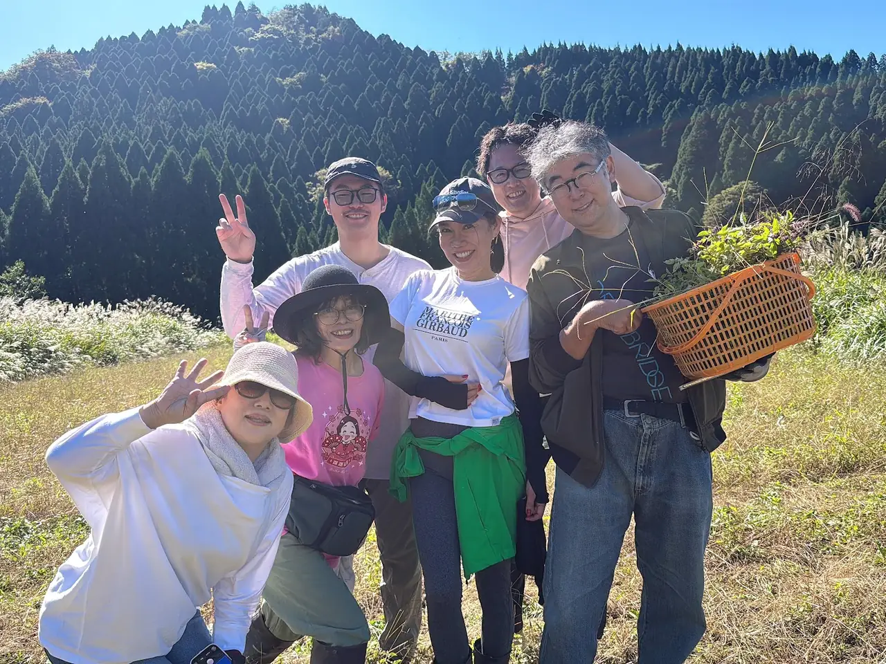
福井県池田町・自然農法のホーリーバジル
福井県池田町の山あいで、農薬も肥料も使わずに
ホーリーバジルを育てています。
収穫したその日に仕上げた、ホーリーバジル100%のお茶をお届けします。
写真は2026年10月15日、みんなで収穫した日のものです。
結舎（むすびや）は、福井県池田町でホーリーバジルを育てている農園です。親子二代で営んでいます。
種まきや収穫には、たくさんの方がお手伝いに来てくださいます。
畑で育てたホーリーバジルを、お茶にしてお届けしています。
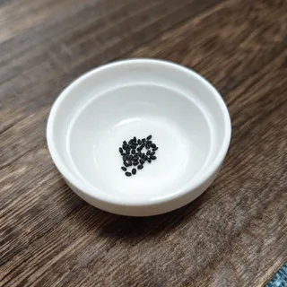
種から育てる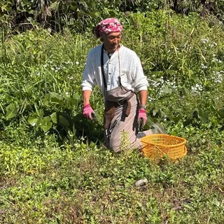
畑で収穫する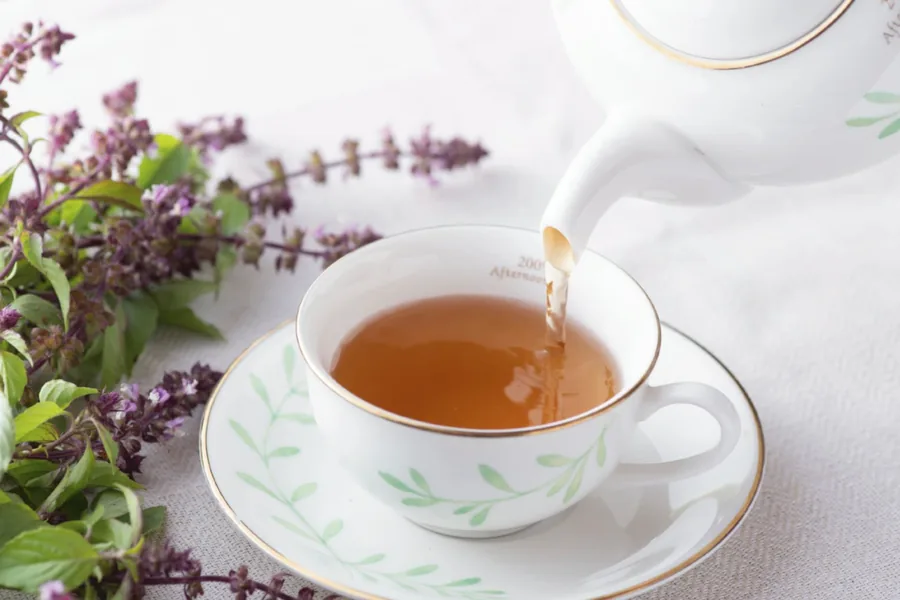
お茶にするホーリーバジルはシソ科の植物です。インドでは「トゥルシー」、タイでは「ガパオ」と呼ばれ、
それぞれの国の暮らしのなかで、長く親しまれてきました。
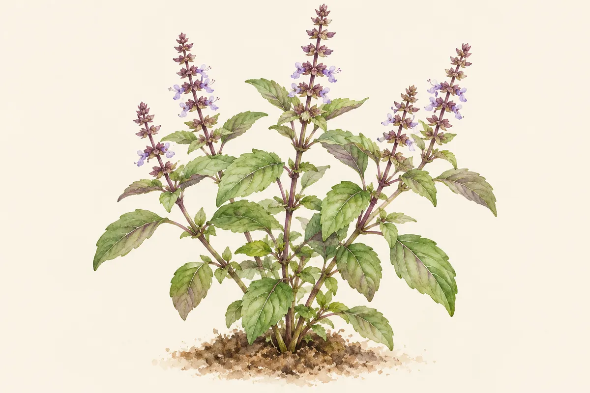
花穂（かすい）葉茎ホーリーバジルOcimum tenuiflorum（O. sanctum）
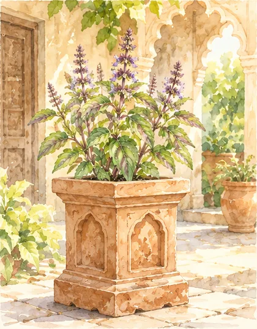
ヒンドゥー教では聖なる植物とされ、多くの家庭が家の前や中庭に専用の鉢を置いて育ててきました。
インドの伝統医学アーユルヴェーダの古い文献『チャラカ・サンヒター』にも登場し、お茶や粉末、生の葉として使われてきました。
タイでは炒め物に使われる身近なハーブです。日本でも知られる「ガパオライス」のガパオは、このハーブの名前です。
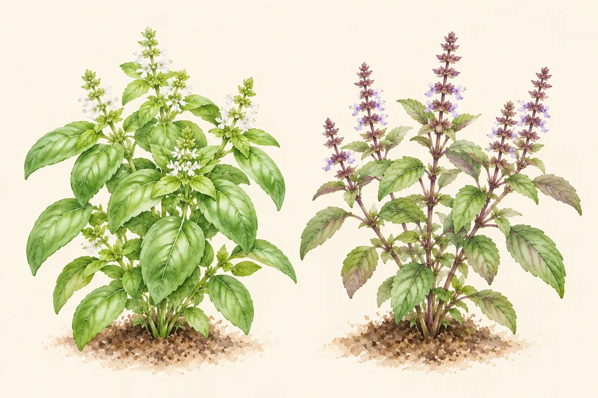
| スイートバジル | ホーリーバジル | |
|---|---|---|
| 学名 | Ocimum basilicum | Ocimum tenuiflorum |
| 和名 | メボウキ | カミメボウキ |
| ほかの呼び名 | バジル、バジリコ | トゥルシー、ガパオ |
| よく使われる料理 | パスタやピザなどのイタリア料理 | タイの炒め物、インドのお茶 |
タイ料理でよく使われる「タイバジル（ホーラパー）」は、スイートバジルの仲間で、ホーリーバジルとは別の植物です。
参考：結舎「ホーリーバジルとは」「ホーリーバジルの育て方」、Wikipedia「カミメボウキ」
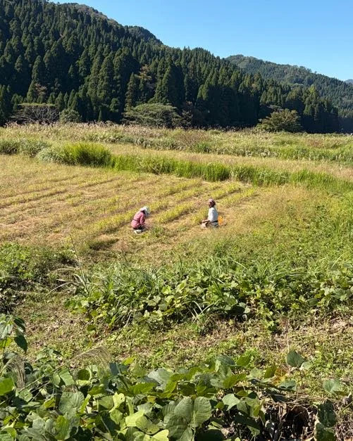
「無農薬」という言葉は広く知られるようになりました。けれど、肥料に頼らずに植物を育てる畑は、まだ多くありません。自然の中では本来、植物は肥料を与えられなくても育っています。
結舎が大切にしているのは、植物が無理をせず、その土地の環境の中でありのままに育つこと。土の中の微生物、季節ごとに変わる風や雨、太陽の光。それらが重なりあって、畑の環境がゆっくりとつくられていきます。
そうして育ったホーリーバジルは、葉に厚みがあり、花の香りも豊かで、濃い紫色が全体にあらわれます。
畑に届く水は、池田町の部子山（へこさん）の水脈から。森の土をゆっくり通り抜けた水が、長い時間をかけて麓の畑へ流れてきます。
本当にいい物「本物」だけをお届けしています。
結舎のInstagramより
結舎では、育て方と仕上げ方に3つの決まりを置いています。
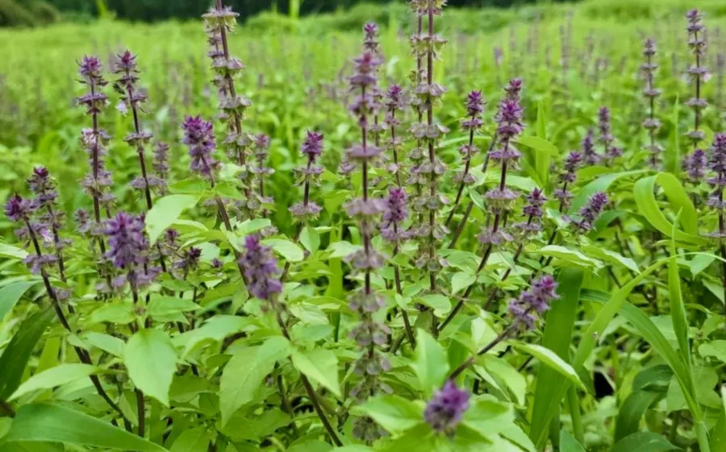
1育て方農薬・肥料・除草剤を使わない
使われなくなった畑を借り、6年かけて土を育ててきました。農薬も肥料も、除草剤も使いません。池田町では、除草剤を使わずに住民が協力して草刈りをしています。冬は雪に覆われ、雪解け水が土づくりを支えています。
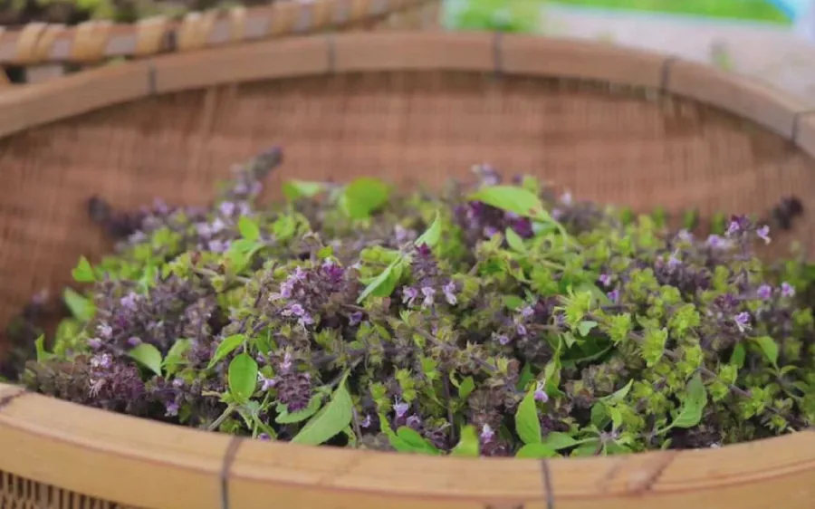
2仕上げ方収穫したその日に仕上げる
以前は自然乾燥でしたが、品質を一定に保つことが難しく、2020年から方法を変えました。いまは収穫したその日のうちに、低温で乾燥させています。
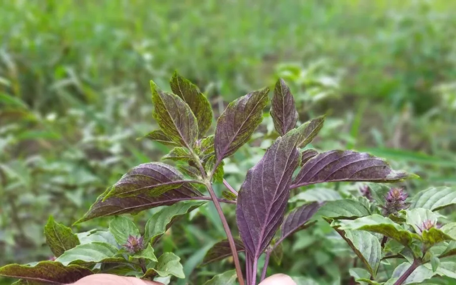
3中身ホーリーバジルだけでつくる
お茶も、生体水も、余計なものは混ぜていません。ホーリーバジル100%です。お茶にカフェインは含まれていません。
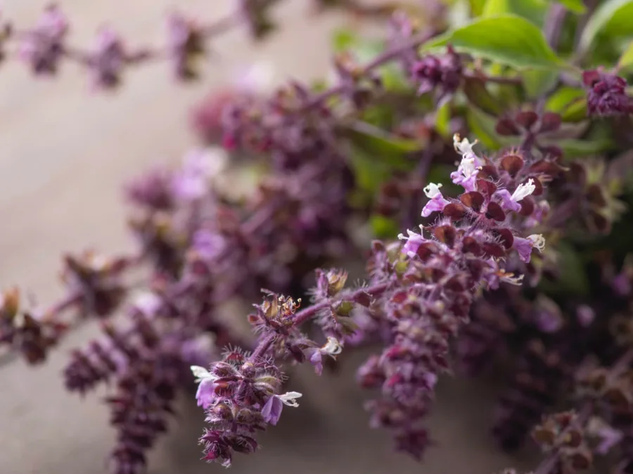
2024年の夏、畑のなかで、幹が太く、葉と花穂の紫がひときわ濃い一株が見つかりました。その種から育てたのが、サーナトゥルシーです。
名前は、亡き妻・早苗（さなえ）さんから。ホーリーバジルが大好きで、池田町へ移ってからもこの植物とともに過ごしてきた人です。「サーナ」には、健康・癒し・輝きという意味があります。
2025年から畑で増やし、2026年の秋に収穫をはじめました。
毎年秋に収穫して、商品をつくっています。
その年の気候で量が変わるため、売り切れのときはご予約を承ります。
お茶にしたり、料理に使ったり、香りを楽しんだり。
窓辺やベランダで、育てることもできます。
お湯1Lに茶葉2gが目安。5分ほど置いて、お好みの濃さでどうぞ。カフェインは含まれていません。
生の葉は炒め物やスープに、乾燥させた葉は調味料に。エスニック料理とよく合います。
ホーリーバジルから取り出した水分だけを詰めた生体水で、香りを楽しめます。
日当たりと水はけがよければ、窓辺やベランダでも育てやすい植物です。育て方は下で紹介しています。
結舎の種で、おうちでも育てられます。結舎が紹介している育て方です。
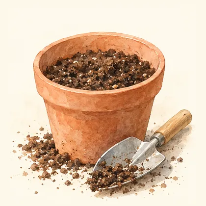
1地温が上がってから種をまきます（地域によって前後します）。プランターなら8〜10号の鉢が向いています。
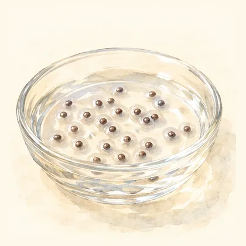
2白いゼリー状のものが種全体を覆うまで、しっかり水を含ませます。
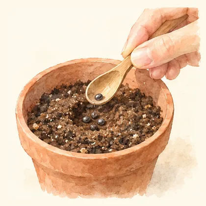
3鉢に土を入れ、まく所を少しくぼませて、土が湿るまで水をやります。種をスプーンですくい、くぼみに3粒ほど置きます。土はかぶせません。
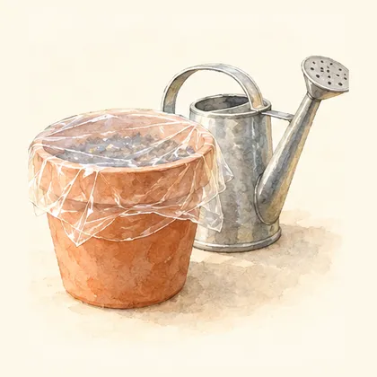
4表面が乾いたら、たっぷり水を。毎日の水やりが難しいときは、ラップをかけると管理しやすくなります。日陰でも大丈夫です。
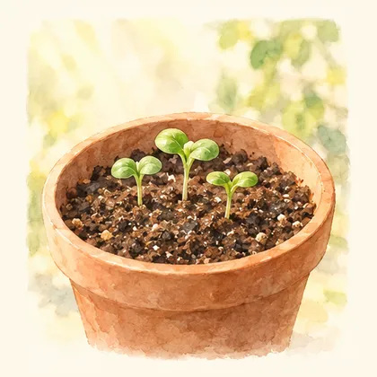
5ラップを外し、芽が3cmほどになったら日に当てます。水やりは朝か夕方の涼しい時間に、葉ではなく根元へ。
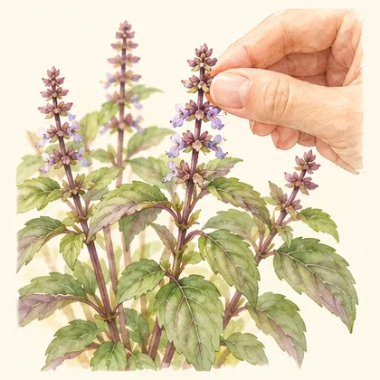
6真ん中に最初に出る花芽を摘むと、葉が横に広がり、葉も花も増えます。50〜70cmほどに育ち、花穂に薄紫の小さな花が咲きます。
結舎の畑で、無肥料・無農薬で受け継いできた種です。40粒入り ¥990（税込）
種をショップで見るみんなで、収穫する日。
種まきや収穫には、たくさんの方がお手伝いに来てくださいます。
一本ずつ手で収穫し、テントの下で選り分けます。
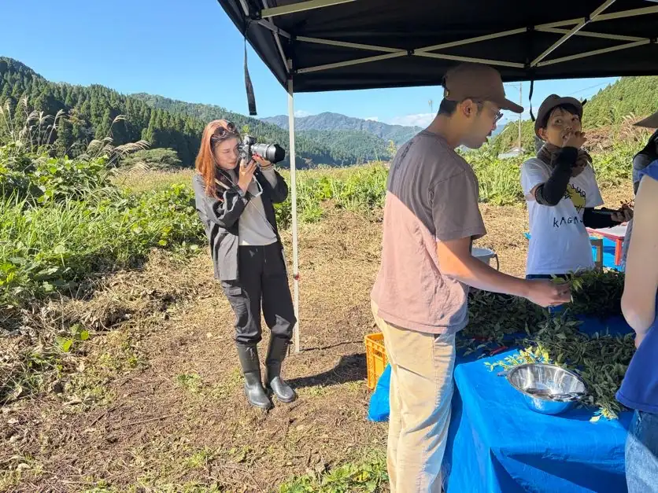
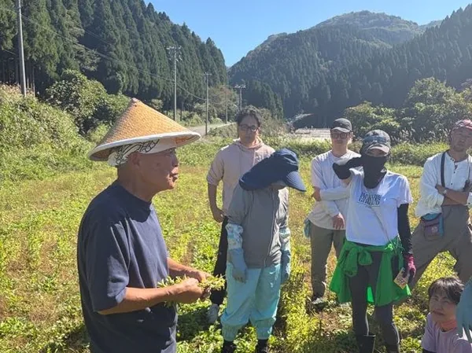
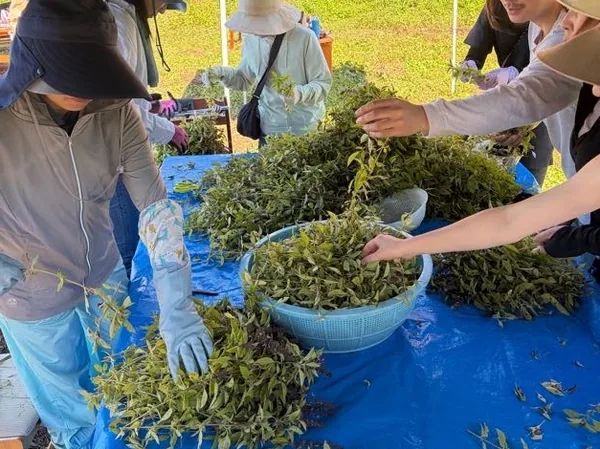
池田町は、福井県でも有数の豪雪地域です。
春に種を蒔き、秋に収穫し、冬は雪に覆われます。
毎年この時期の満月に種を蒔きます。たくさんの方がお手伝いに来てくださいます。
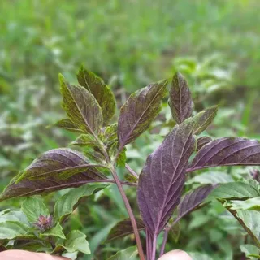
7月育った苗を畑に植えます。除草剤は使いません。
一本ずつ手で収穫し、その日のうちに乾燥させます。
畑は雪に覆われます。雪解け水が、土づくりを支えてくれます。
千葉で始めたホーリーバジルづくりを、池田町で続けています。
合同会社 結舎 代表杉 茂樹
はじまりは千葉の福祉施設。利用者のみなさんと一緒に、自然農法でホーリーバジルを育てたのがきっかけでした。
2015年、池田町出身の方から栽培の相談を受けたご縁で、妻の早苗さんと池田町へ移り住みました。移住したころ約3反だった畑は、2021年には約2町まで広がりました。
畑の様子は、Instagramでお知らせしています。
見学のご希望は、お電話でお気軽にどうぞ。
取り扱い店舗・パートナー企業を募集しています。
結舎の商品を取り扱っていただけるお店からのご連絡をお待ちしています。
毎年秋に収穫し、11月ごろから順次販売しています。その年の気候で量が変わるため、売り切れになることがあります。
できます。お電話またはお問い合わせからどうぞ。秋ごろからは、オンラインショップでもご予約いただけます。
別の植物です。どちらもシソ科メボウキ属ですが、よく知られるスイートバジルの学名はOcimum basilicum、ホーリーバジルはOcimum tenuiflorumです。
同じ植物です。タイではホーリーバジルを「ガパオ」と呼びます。
日当たりと水はけがよければ、窓辺やベランダでも育てやすい植物です。手順は育て方をご覧ください。
入っていません。ただし、妊娠中の方はお控えください。
ティーバッグひとつ（茶葉2g）に、お湯1Lが目安です。5分ほど置いて、お好みの濃さでお召し上がりください。
できます。秋には、畑いっぱいに広がるホーリーバジル畑の見学会もしています。お気軽にお問い合わせください。
ぜひご相談ください。取り扱い店舗・パートナー企業を募集しています。お電話またはメール（support@musubiya-tea.com）でご連絡ください。
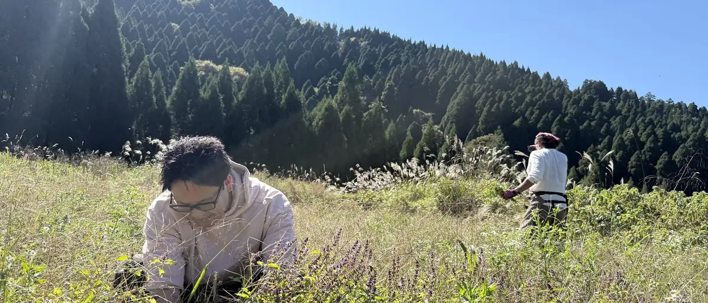
福井県今立郡池田町水海54号3番地1北陸自動車道 武生ICから車で約30分
090-4410-0110support@musubiya-tea.com
事前にご連絡ください畑は町の中心部から離れた山あいにあります